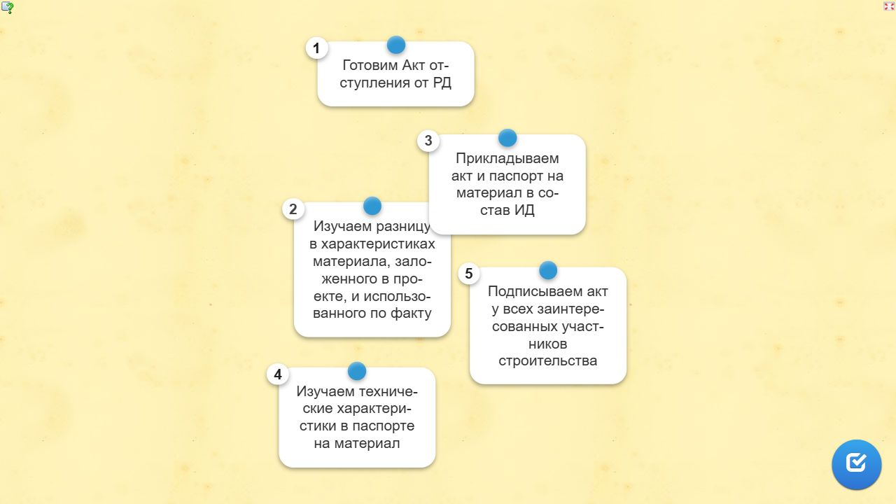

Как сдать объемы выполненных работ заказчикуЛокальный архив курса
МИКРОКУРСЫ. 2026 · Как сдать объемы заказчику
Что делать в случае замечаний
Вера СафуановаЭксперт строительного контроля с опытом работы в строительной сфере более 15 лет
В случае, когда исполнительная документация и смета подтверждают факт выполненных работ я согласовываю КС-2. Это означает, что вы составили ИД без грубых ошибок и смета подтверждает объем и расценки. Однако нередко могут быть направлены замечания. Их необходимо оперативно устранить. Главное правило — не паниковать! Если вы уверены в объемах и качестве, важно грамотно обосновать свои замечания. Срок для устранения указывается в договоре подряда.
Если срок не указан, условно принимаем его равным двум неделям. Не откладывайте исправление замечаний — скоро предстоит готовить новое выполнение, поэтому важно разобраться с текущими задачами и сдать их как можно быстрее.
Перед тем как освоить исправление замечаний, посмотрите видео, как правильно и неправильно реагировать на замечания. Да, оно с юмором, но я уверена, что каждый узнает в нем себя.
Какие бывают замечания
Замечания могут быть как обоснованными, так и необоснованными.
Если в замечаниях от Заказчика прописана одна фраза «Не соответствует», свяжитесь с представителем, который проверял ИД, и уточните, в чем именно ошибка. Мне приходится так писать, когда относительно объема возникает много вопросов и следует полное несоответствие в фактическом выполнении работ на объекте, ИД, схеме, паспорте, и смете.
Перейдем к практике. Я подготовила для вас реальные замечания инженера СК. Ознакомьтесь с ними и определите, какие из них являются необоснованными.
Карточки для самопроверки
Исходные карточки для самопроверки. Локальная страница не оценивает ответы.
1. Определите номера необоснованных замечаний:
1
2
3
4
8
9
10
11
Ответ, помеченный в данных источника
4; 10; 11
Источник и ограничения. Статическое содержание не проверяет ответы и не воспроизводит анимацию.
Теперь давайте определим, какие замечания являются обоснованными.
Карточки для самопроверки
Исходные карточки для самопроверки. Локальная страница не оценивает ответы.
1. Определите, какие замечания являются обоснованными:
1
2
3
4
5
6
7
8
Ответ, помеченный в данных источника
1; 2; 4; 5; 6; 7
Источник и ограничения. Статическое содержание не проверяет ответы и не воспроизводит анимацию.
Как отвечать на замечания
Необоснованные замечания
На каждый пункт отвечайте отдельно. Не стоит писать «откорректировано» и точно не нужно звонить по телефону и требовать отмены замечаний. Уточните, что именно сделано, и где в томе ИД это можно увидеть. Это значительно ускорит процесс повторной проверки ИД. Примените «метод СК» и проверьте свою документацию. В случае общего ответа я снова буду проверять весь пакет документов и возможно найду новое несоответствие.
Попробуйте определить, как правильно ответить на необоснованные замечания.
Как ответить на необоснованные замечания
Исходные карточки для самопроверки. Локальная страница не оценивает ответы.
1. Что ответить по п.4?
Не требуется
Согласно приказу Минстроя от 16.05.2023 №344/пр в п.1 не требуется указывать объем выполненных работ
Замечание является необоснованным согласно приказу Минстроя от 16.05.2023 №344/пр
Ответ, помеченный в данных источника
Согласно приказу Минстроя от 16.05.2023 №344/пр в п.1 не требуется указывать объем выполненных работ
2. Что ответить по п.10?
Замечание является необоснованным согласно приказу Минстроя от 16.05.2023 №344/пр
Согласно приказу Минстроя от 16.05.2023 №344/пр в п.3 не требуется указывать объем на материал, указанный в паспорте
Не требуется
Ответ, помеченный в данных источника
Согласно приказу Минстроя от 16.05.2023 №344/пр в п.3 не требуется указывать объем на материал, указанный в паспорте
3. Что ответить по п.11?
Не требуется
Журнал земляных работ ведется при строительстве и реконструкции линейных участков магистральных и промысловых стальных трубопроводов нефтегазовой отрасли
Замечание является необоснованным согласно СП 543.1325800.2024
Ответ, помеченный в данных источника
Журнал земляных работ ведется при строительстве и реконструкции линейных участков магистральных и промысловых стальных трубопроводов нефтегазовой отрасли
Источник и ограничения. Статическое содержание не проверяет ответы и не воспроизводит анимацию.
Обоснованные замечания
Здесь действует то же правило. Отвечайте на каждый пункт отдельно с разъяснением, что было сделано для устаренения замечания. Если в ответе я увижу, что вы на самом деле проработали замечание и исправили его, то проверю только этот пункт и не буду повторно смотреть весь пакет документов.
Попробуем?
Как ответить на обоснованные замечания. Часть2
Исходные карточки для самопроверки. Локальная страница не оценивает ответы.
1. Что ответить по п.1?
Откорректировано
Замечание устранено
Акты ГРО и РО приложены к ИД, л.6-10
Ответ, помеченный в данных источника
Акты ГРО и РО приложены к ИД, л.6-10
2. Что ответить по п.4?
ИС откорректированы
Замечание устранено
Штампы ИС исправлены в соответствии с ГОСТ Р 51872-2024
Штампы ИС исправлены в соответствии с ГОСТ Р 51872-2024, фактические размеры и высотные отметки нанесены на ИС
Ответ, помеченный в данных источника
Штампы ИС исправлены в соответствии с ГОСТ Р 51872-2024, фактические размеры и высотные отметки нанесены на ИС
3. Что ответить по п.7?
Замечание устранено
В п.6 перечислены нормативные документы, относящиеся к виду работ, предъявляемых в АОСР
П. 6 откорректирован на АОСР
Ответ, помеченный в данных источника
В п.6 перечислены нормативные документы, относящиеся к виду работ, предъявляемых в АОСР
Источник и ограничения. Статическое содержание не проверяет ответы и не воспроизводит анимацию.
Исправленный том направляйте также с реестром, сопроводительным письмом и ответом, где будут указаны все ваши корректировки. В таком случае мне будет понятно, что это ответ на замечания, и проверять нужно только устранение этих ошибок. Если ответа на замечание не будет, это станет поводом проверять все сначала.
Теперь ваша задача — определить, как поступить при замечании: «Примененный материал не соответствует согласованному в РД (марка и производитель)».
Как правильно ответить на замечание
Снимок исходного упражнения. Перетаскивание, выбор и проверка ответа требуют LearningApps.

Как правильно ответить на замечание · статический снимок.Доступный текст исходного упражнения
Изучаем разницу в характеристиках материала, заложенного в проекте, и использованного по факту
Изучаем технические характеристики в паспорте на материал
Готовим Акт отступления от РД
Подписываем акт у всех заинтересованных участников строительства
Прикладываем акт и паспорт на материал в состав ИД
Источник и ограничения. Статическое содержание не проверяет ответы и не воспроизводит анимацию.